|
|
| Mexican Dance |
|
⚫Latin-american and Hispanic culture in Mexico ⚫Mexican Festivals ⚫Mexican Food ⚫Mexican Dance ⚫Mexican Clothing ⚫Tourist spots in Mexico ⚫Contact us for queries ⚫Back to Home page |
Mexico has a rich tradition of folk dances that reflect the country's indigenous, African, and European heritage. Some of the most popular local dances of Mexico are : 1. Jarabe Tapatio - also known as the Mexican Hat Dance, this dance represents courtship and is often referred to as the National Dance of Mexico 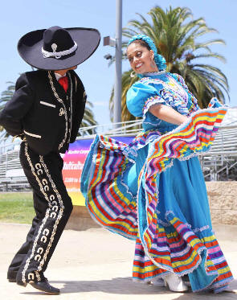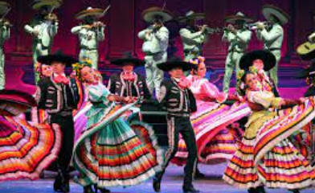 2. Son Jarocho - a folk dance originating from the state of Veracruz, this dance is accompanied by instruments such as the harp, guitar, and marimba. 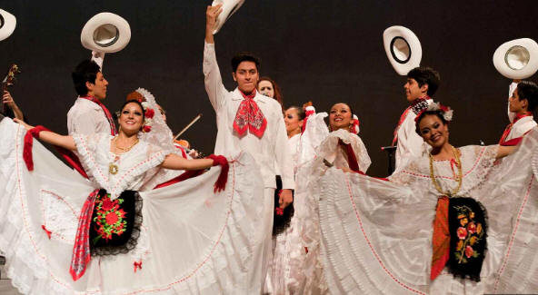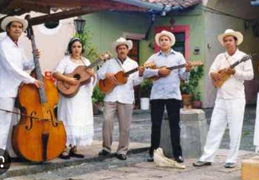 3. Danza de los Viejitos - a dance that originated in the state of Michoacán, this dance features four old men representing earth, air, fire, and water, and is notable for the wooden shoes worn by the dancers. 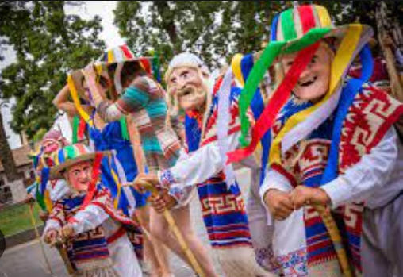 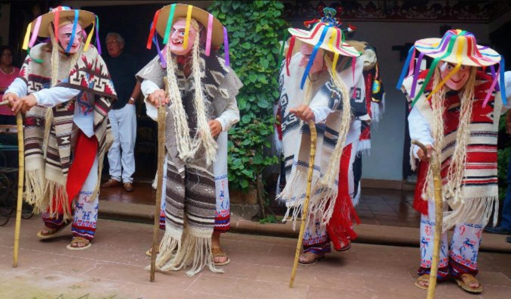 4. Danza del Venado - a ritualistic dance that depicts the story of a deer hunt and is typically performed in springtime, originating in the Yaqui regions of Sonora and Sinaloa. 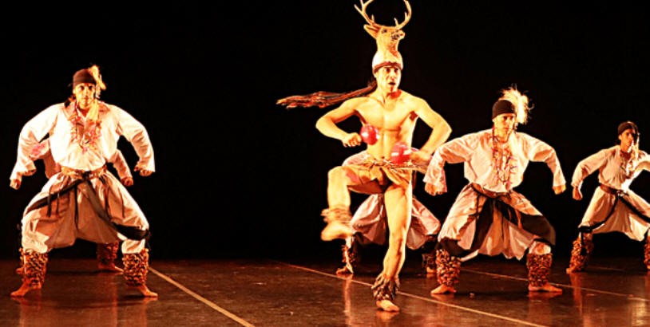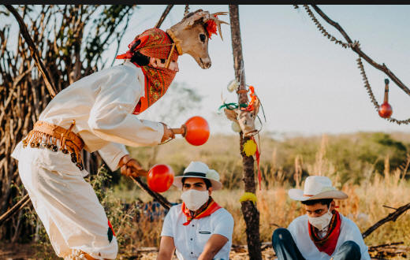 5. Concheros - an important traditional dance and ceremony that has been performed in Mexico since pre-Columbian times, featuring dancers wearing feathered headdresses and shells. 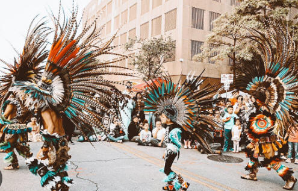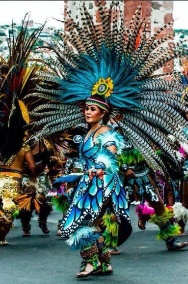 6. Los Negritos - a dance originating from Veracruz that features dancers wearing blackface and colorful costumes. 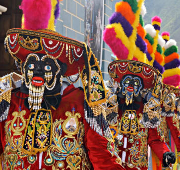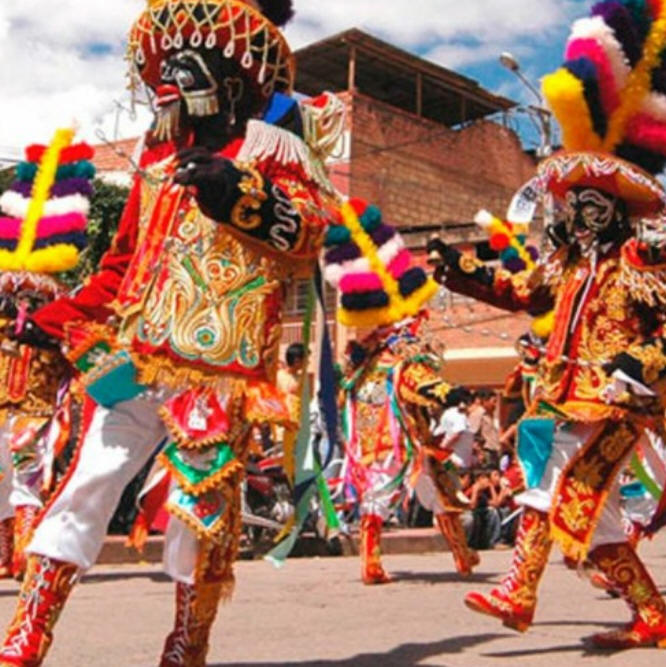 7. Danza de los Diablos - a dance that is key to understanding Mexico's often sidelined African heritage, featuring dancers wearing devil masks and colorful costumes. 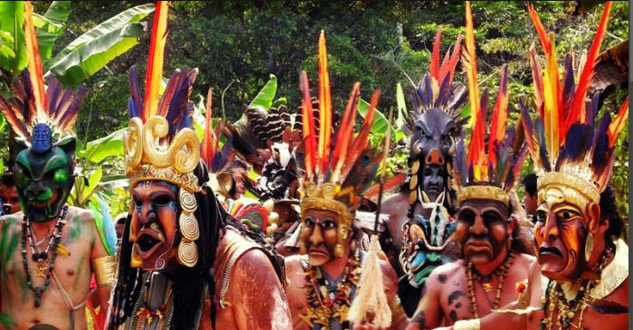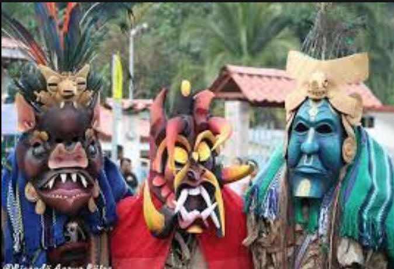 These dances are often performed at festivals, civic events, and patron saint festivities throughout Mexico, and are recognized as cultural heritage both nationally and internationally. |